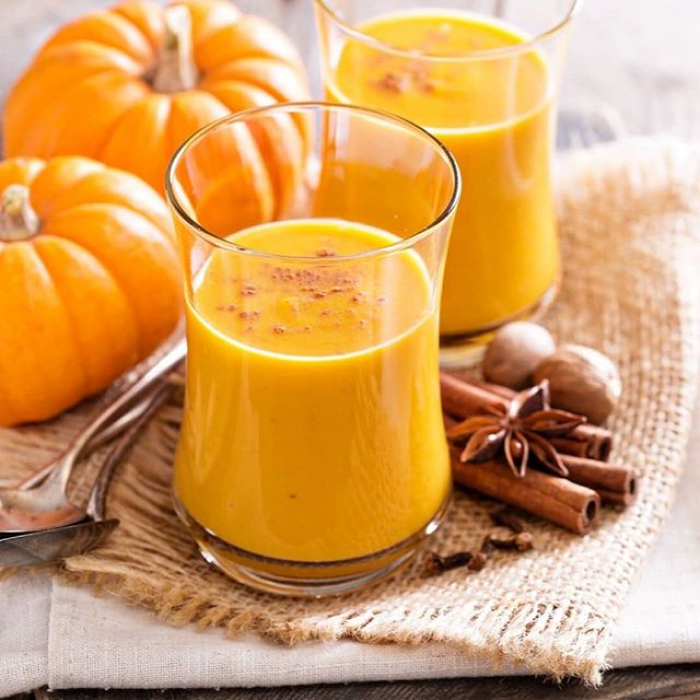
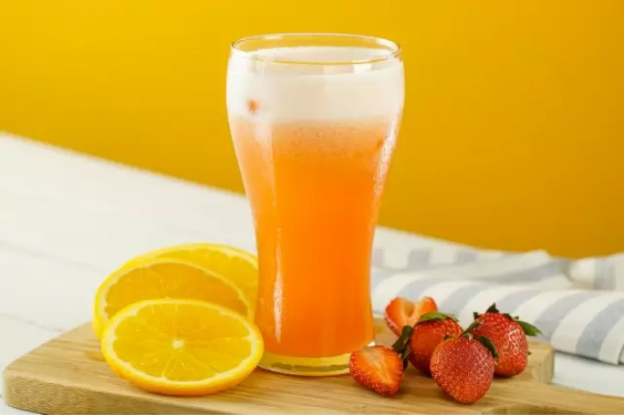

Beneficios de bebidas

Batido détox de calabaza
Es importante desintoxicarse cada cierto tiempo, para mantener una buena regulación intestinal.
Leer más
El té ayuda a la digestión
Está comprobado que beber un té después de comer, mejora el proceso digestivo.
Leer más

Jugo de Naranja Fresa
las fresas contienen altas dosis de fibra y te ayudan a limpiar el organismo, sobre todo si las consumes en ayunas.
Leer másCopyright © 2021 Hazdapa.